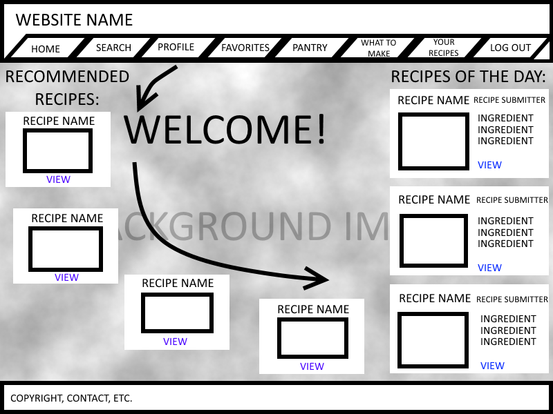

getdrinkrecpies.com
Team Recipe
CSC 413 Advanced Software Development I
Spring 2015
Introduction
Purpose
The purpose of this document is to serve as a guide to designers, developers, and testers who are responsible for the engineering of the getdrinkrecpies.com project. it should give the engineers all of the information necessary to design, develop and test the software.
Scope
This document contains a complete description of the functionality or the getdrinkrecpies.com project. It includes the functional and nonfunctional requirements as well as use cases, the control flow, information about the database, behind the scene processes and external applications getdrinkrecpies.com will interface with. This document also contains the weekly reports.
System Overview
getdrinkrecpies.com is a recipe website for people who like to cook and try new recipes but don't know which ingredients they need to use to make the drink of dish they want. Users can post, search, rate and review/comment on recipes as well as attach pictures to a recipe.
People can input ingredients that they have in their kitchen/pantry and the website will give them a list of recipes they can make with those ingredients. If the user picks a recipe to try and they don't have the ingredients a list of ingredients to buy will be generated for them. People can search for recipes by tag or by ingredients. If they want a more in-depth search they can filter searches. The user also has the ability to exclude ingredients from their searches.
Team Recipe
Design: Andre Wiggins, Garrett Reuscher
HTML/CSS: Andre Wiggins, Garrett Reuscher
Javascript/jQuery: Benedicta Baidoo
PHP: Jason Brown, Kyler Edwards, Amanda Jaynes
C#: Amanda Jaynes
Database: Benedicta Baidoo
Web server management: Jason Brown
Technical document: Benedicta Baidoo, Kyler Edwards
Software Architecture
Front End: HTML, CSS, Javascript, JQuery
Back End: PHP
Database: MySQL
Web Server: getdrinkrecpies.com is hosted on Openshift which runs redhat linux.
Platform: any device with a web browser and internet connection
Functional Requirements
Home Page
Not logged in
Sign up/Log in (not logged in)
Login/Sign up
The login/sign up prompt is going to be a pop up with the rest of the page grayed out.
Logged in

Recommended Recipes
The recommended recipes are made up of recipes the user has favorited, saved for later, or have the same ingredients as recipes in their lists.
Pantry Page
List view
Favorites Page
List view

Single view
Your Recipes
List view
Single view
Search
Regular Search
Not logged in
Logged in
The search is a textbox with a button that says "search". Anyone can search for recipes. What they enter will be searched through ingredients and tags. No open searches. If an open search is attempted the search box will have a red border around it.
The search results will be split between tag results and ingredient results.
Advanced Search Filtering
Not logged in
Logged in

Anyone can use the advanced search. The search will filter recipes as specified. No open searches allowed. A parameter must be given.
Recipes can be filtered by:
- Ingredient
- Pantry List
- Tags
- TagPrep Time
- Cook Time
- Serving Number
Recipe of the Day
The right sidebar with a list of random recipes with the ingredient of the day. The recipes refresh every 5 minutes with another list of recipes. The recipes only list the name, a picture of the recipe and the ingredients that are used. The "view" takes the user to the recipe page with all the information.
Recipe
Create
Only the user can create a recipe.
| Field Name | Input Type | Length | Function / Description |
|---|---|---|---|
| Recipe ID | auto generated | This isn't visible to anyone. It's just for the database and look up. | |
| Recipe name | text field | The name of the recipe. | |
| Username | auto generated | The name of the user who is submitting the recipe. | |
| Ingredients | text field | no limit | The user can input ingredients. Ingredients will be separated by a comma. when the user enters an ingredient, the text will be converted into a tag that can be deleted. |
| Description | text field | A description of the recipe. | |
| Instructions | text field | Instruction for the recipe. Should be listed. | |
| Prep Time | dropdown list | The user will pick from a predetermined selection of time intervals. | |
| Cook Time | dropdown list | The user will pick from a predetermined selection of time intervals. | |
| Number of Servings | text field | Number of servings. | |
| Tags | text field | no limit | Users can have their own. |
| Date Submitted | datetime | Date the recipe was submitted. | |
| Date Last Modified | datetime | Date the recipe was last modified. |
Edit
Only the user who created the recipe can edit the recipe. The user can edit any of the fields of their recipe except for the Recipe ID and username. The user clicks an "edit" button to edit a recipe. Each time the recipe is edited the modified date field will be updated. For tagging anyone can add tags to a recipe.
Delete
Only the user who created the recipe can delete the recipe. The user clicks a red "delete" button to delete the recipe.
Rate
Only users can rate a recipe. Guests will have to log in or make an account to rate the recipe.
Users
Only users will be able to submit recipes. They can submit as many recipes as they want.
Recipe To Make List
List of recipes the user wants to make. Ingredients in this list get compared with the ingredients in the pantry list.
Pantry List
A list of ingredients the user has available on hand.
Shopping List
System compares the ingredients in the recipe with the ingredients in the user's pantry list and auto generates a list of ingredients to get.
Favorite Recipe List
A list of the user's favorite recipes.
NoEat List
A list of ingredients that the user wants to exclude from all searches
Future Features
Meal Planner
Picks a random assortment of recipes (that the user has and hasn't tried) that use ingredients in the user's pantry, and picks a recipe for the user to make for each meal of the week. Example: http://bit.ly/1Dqij3b
Daily Recipe
Picks a random recipe that the user hasn't tried (possibly with some personal tailoring) and displays it on the home page.
Conversion of Ingredient Portions
Allows users to convert ingredient amounts to whatever they are most comfortable using. Would work as a drop down menu next to the ingredient amount on each recipe page.
Recipe Cards
Recipes can be exported/shared to social media as different templated recipe cards.
Database
getdrinkrecpies.com uses a MySQL relational database.
Entity-Relation Diagram
{kind=link}
click to enlarge image
Tables
BrandIngredients
This table connects brands and ingredients. Brands can have multiple ingredients and ingredients can be associated with multiple brands.
Bands
This table is for the different brands, if users choose to include them. All entries in this table are unique, there can be no duplicates. Both users and administrators can add brands to this table.
Favorites
This table hold the recipes each user adds to their favorite list. A user can favorite any recipe but they can only favorite a recipe once.
Ingredients
All the ingredients are stored in this table. Ingredients are food or drink items. The ingredients are unique, there can be no duplicates. Users and administrators can submit entries to this table. Only unique entries are accepted.
IngredientTag
This table connects the ingredients and the tags.
Measurements
This table holds measurements used to measure ingredients. Only the database administrator can edit this table. Entries 1-15 are used for solid and dry foods, 9-18 are used for liquid foods and beverages and 19-21 are temperatures.
No Eat List
This table is for ingredients the user doesn't want to be included in searches.
Pantry
This table is for ingredients that the user already has with them.
Ratings
This table holds ratings that the user gives to the recipe. The user can only rate each recipe once.
Recipe
This table holds all of the recipes.
RecipeIngredients
This table connects the recipe table and the ingredients table. Recipes can include many ingredients and ingredients can be associated with multiple recipes.
RecipeTag
This table connects the recipe with the tags. Recipes can be many tags and tags can be associated with many recipes.
RecipeToMakeList
This table holds recipes that each user wants to make.
Tags
Tags cannot be ingredients. They describe the recipe, e.g. Mexican, Italian, Seafood. All tags are unique; there can be no duplicates. Users and administrators can add tags.
TimeRef
This table holds time denominations. Only the database administrator can edit this table. Time denominations are used for a recipe cook time and prep time.
UnverifiedImages
Users can submit images to be associated with recipes. All images are monitored and checked for appropriateness. If the image is verified, it gets sent to the verified images table. All incoming images are sent to this table. No images from this table gets uploaded into the website.
UserAccounts
This table holds all of the users of the websites. Both the userID and the Username have to be unique. There can be no duplicates in the table.
VerifiedImages
Images that are verified go into this table. Images from this table get uploaded on the website.
Conclusion
The scope of the project was a great size in the beginning. However, towards the end more and more ideas were thrown in that shouldn't have been added. Had all these ideas been considered in the beginning, the scope would have been ok.
We learned that the project would have been better suited for a much smaller team. Two to three people would have been a better team size. Our team was disorganized. We couldn't meet up as often as we should have and a lot of the time there just wasn't enough work for the entire team to be deeply involved. The project size was good however, because if the project where to grow to accommodate the team size our skill set wouldn't have been able to handle it.
On a positive note, every member of the team learned a new technology, or improved a skill.